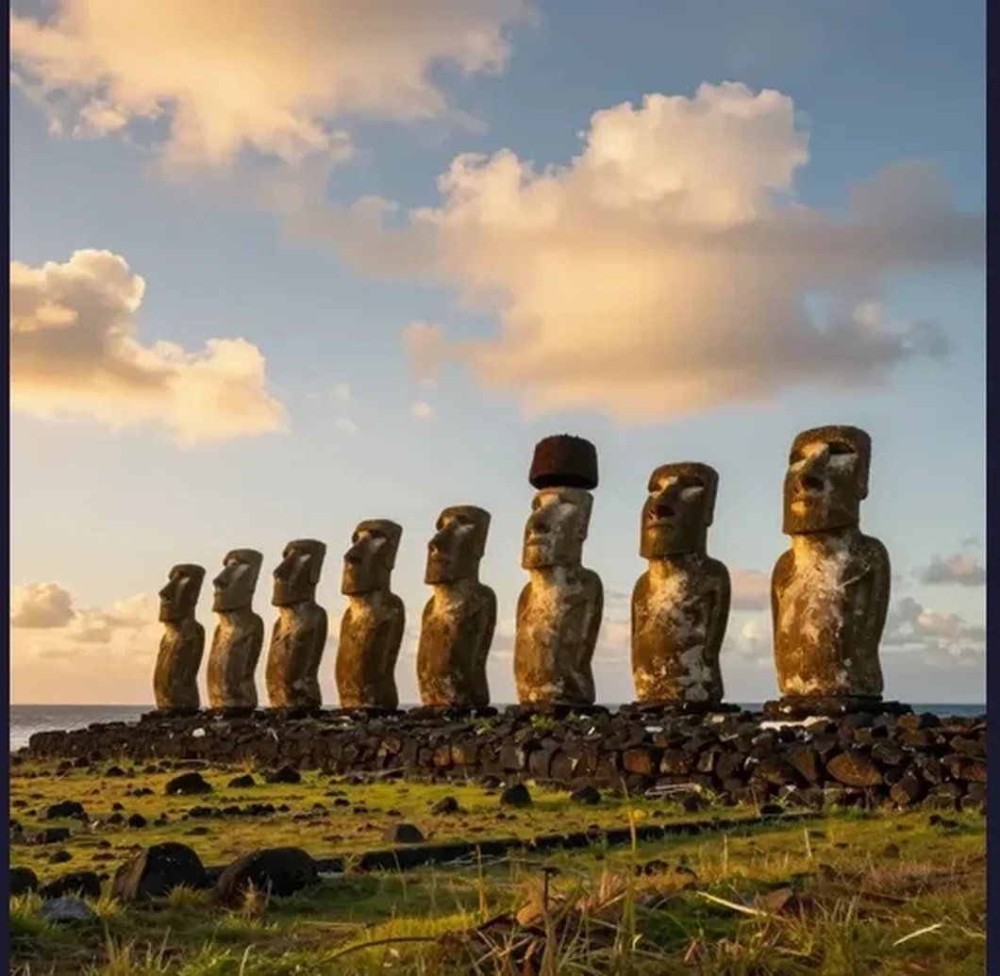
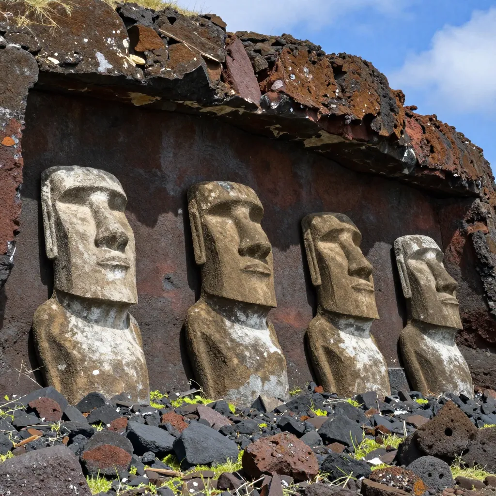
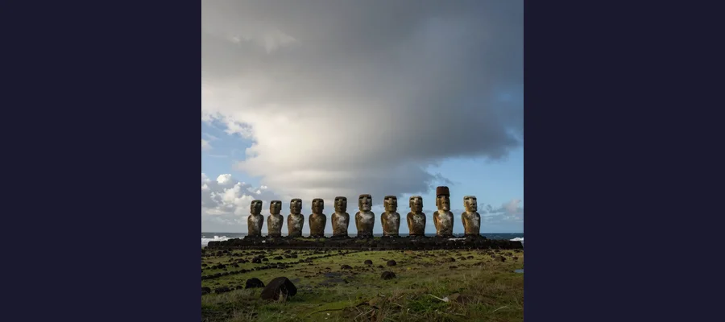

The Moai of Easter Island: How Did a Lost Civilization Move 1,000 Giant Stone Statues?

The moai of Easter Island have stood sentinel over the Pacific for centuries. How the Rapa Nui people moved nearly 1,000 of these colossal statues remains one of archaeology's greatest puzzles.
On Easter Sunday, April 5, 1722, Dutch navigator Jacob Roggeveen and his crew sighted a low, treeless island in the southeastern Pacific Ocean — one of the most remote inhabited places on Earth, 3,700 kilometers from the Chilean coast and 2,000 kilometers from the nearest inhabited island. They expected to find perhaps a small fishing community. Instead, they found hundreds of massive stone statues standing on stone platforms around the island's perimeter, gazing inland with their backs to the sea. The statues — called moai by the indigenous Rapa Nui people — were enormous: towering figures averaging 4 meters tall and weighing 12.5 tons, carved from volcanic tuff with elongated heads, solemn faces, and hands clasped over their stomachs. Some wore colossal cylindrical hats of red stone. Many had been toppled and lay broken on the ground. The islanders who greeted Roggeveen's ships numbered perhaps 2,000 to 3,000, living in a barren, deforested landscape with no trees, no wheels, no draft animals, and no visible means of having created such monumental works. The question that struck Roggeveen that Easter morning has haunted every visitor and scholar since: how did a small, isolated population carve, transport, and erect nearly 1,000 colossal stone statues without modern technology? The mystery of the moai of Easter Island — and the civilization that created and then destroyed them — is one of the most compelling stories in human history, a tale of genius and hubris, reverence and ecological catastrophe.
Easter Island, known to its indigenous people as Rapa Nui and historically as Te Pito o te Henua ("the navel of the world"), is a tiny triangular volcanic island covering just 163 square kilometers. Polynesian navigators reached this remote outpost sometime between 800 and 1200 CE, journeying across thousands of miles of open ocean in double-hulled canoes. Over the following centuries, they developed a complex, competitive society that produced one of the most remarkable bodies of monumental architecture in the ancient world — rivaled in scale only by the Pyramids of Giza and the sprawling temples of Angkor Wat. And then, within a few centuries of its peak, that civilization collapsed — the forests were cut down, the statues were toppled, and the population crashed. The moai still stand (or lie fallen) on their platforms, silent witnesses to a drama whose full story we are only now beginning to understand.
Carved from the Volcano: The Moai and Their Making
The moai are monolithic human figures carved from volcanic tuff — compressed volcanic ash — quarried from the slopes of Rano Raraku, an extinct volcano on the eastern side of the island. Nearly 887 moai have been catalogued by archaeologists. The average moai stands about 4 meters (13 feet) tall and weighs 12.5 tons, but the range is enormous. The largest moai ever successfully erected, known as Paro, stands 10 meters (33 feet) tall and weighs approximately 82 tons. The largest moai ever carved — never removed from the quarry — is known as El Gigante, measuring a staggering 21 meters (69 feet) long and estimated at 270 tons. It remains attached to the quarry rock, frozen mid-carving, as if its creators simply walked away.
The carving process was extraordinary in its own right. The sculptors carved the moai face-up, lying on their backs, directly from the volcanic bedrock of Rano Raraku's inner and outer slopes. Using hand-held stone tools called toki (basalt chisels), they carved the statue in place, separating it from the bedrock only when the carving was nearly complete. The statue was then slid down the slope and stood upright in a specially prepared hole for finishing touches on the back and base. Nearly 400 unfinished moai remain at Rano Raraku in various stages of completion — some still attached to the rock, others lying in transport positions on the slopes, as if the quarry was abandoned in a single catastrophic moment. In reality, the abandonment was gradual, as the civilization that produced the moai slowly consumed the resources that sustained it.
📜 By the Numbers: The Moai of Easter Island
The sheer scale of the moai project is staggering. 887 statues have been catalogued. Of these, 397 remain at the Rano Raraku quarry, many unfinished. 288 were successfully transported and erected on ahu platforms around the island's coastline. 92 lie "in transit" — abandoned on ancient roads between the quarry and their intended platforms. The statues were erected on approximately 300 ahu (stone platforms) distributed around the island's perimeter. Many moai originally wore pukao — cylindrical "hats" carved from red scoria stone quarried from a different site (Puna Pau), weighing up to 12 tons each. The pukao may have represented hair topknots worn by high-status individuals. The moai face inland, not out to sea — their role was to watch over the villages with their backs to the ocean, embodying the spirit of deified ancestors. The project consumed vast amounts of timber and rope, resources that the island could not replenish — a key factor in the ecological collapse that would follow. The scale of the undertaking was comparable to building the megalithic monuments at Stonehenge or the vast Terracotta Army of China's first emperor.

Unfinished moai remain embedded in the volcanic tuff of Rano Raraku, frozen mid-carving — as if the sculptors simply walked away.
The Mystery of Transport: How Did the Moai Walk?
The question of how the Rapa Nui transported multi-ton stone statues across distances of up to 18 kilometers without wheels, draft animals, or modern technology has generated more debate than almost any other problem in Polynesian archaeology. The island had no horses, no cattle, no wheels, and — by the time Europeans arrived — virtually no trees. The Rapa Nui oral tradition offers a tantalizing clue: the statues, the islanders said, "walked" to their platforms. For centuries, this was dismissed as myth. Then modern science began to take it seriously.
The Leading Transport Theories
Several competing theories have been proposed to explain the moai transport. Each has its strengths and weaknesses:
- The "Walking" Theory (Rocking/Upright Transport) — Proposed by archaeologists Terry Hunt and Carl Lipo and supported by experiments, this theory holds that the moai were transported upright, rocked back and forth by teams of pullers using ropes attached to the statue's head and base. In 2011 and 2012 experiments, a team of 18 people successfully "walked" a 5-ton concrete replica moai over 100 meters using three ropes. In 2025, a study published in the Journal of Archaeological Science confirmed that the shape of moai bases — slightly convex and forward-leaning — is consistent with a rocking gait. This theory elegantly explains why fallen moai along the ancient roads show damage to their bases consistent with tipping forward during transport.
- The Sledge and Rail Theory — The moai were placed on wooden sledges and dragged over lubricated wooden rails or a bed of small, rounded stones. This theory, long the orthodox explanation, requires substantial timber — a resource that became increasingly scarce as deforestation progressed. It also struggles to explain why some moai along the transport routes are found in upright positions rather than lying on their backs.
- The Lever and Pivot Theory — Czech engineer Pavel Pavel and Norwegian ethnographer Thor Heyerdahl demonstrated that a moai could be moved incrementally by attaching ropes to the head and tilting the statue forward, then pivoting it on its base. This method requires fewer people than sledge transport but is extremely slow and could not account for the sheer number of statues that were successfully moved.
- The Extraterrestrial Hypothesis — Popular in fringe literature, this theory proposes that aliens assisted with moai transport. There is no archaeological evidence for this claim, and it is universally rejected by mainstream scholars.
🚢 The Quarry at Rano Raraku: A Factory Frozen in Time
One of the most haunting sights on Easter Island is the interior slope of Rano Raraku, the volcanic crater where nearly all the moai were carved. 397 statues remain here in various stages of completion — some barely roughed out of the bedrock, others fully carved and ready for transport, still others lying on the slopes in the exact positions where they were abandoned. The quarry is a snapshot of a civilization in the act of creation — and in the act of stopping. Carving marks from stone toki chisels are still visible on the unfinished surfaces. The distribution of abandoned moai suggests that production did not cease gradually but in stages — first the outer slopes were abandoned, then the inner crater walls, as if the carvers were retreating deeper into the quarry before finally giving up. Archaeological evidence indicates that the quarry was active primarily between c. 1250 and 1500 CE, with production peaking around 1300-1400 and declining sharply thereafter. The unfinished moai of Rano Raraku are among the most evocative archaeological remains anywhere in the world — a factory frozen in time, its workers vanished, its products abandoned mid-creation, as mysterious in their own way as the Nazca Lines of Peru or the enigmatic undeciphered scripts of the ancient world.

The 15 restored moai of Ahu Tongariki, the largest ceremonial platform on Easter Island, stand with their backs to the Pacific — guardians of a civilization that vanished.
The Collapse: An Island Consumed by Its Own Ambition
The story of Rapa Nui's ecological collapse is one of the most debated narratives in environmental history. The traditional account — popularized by Jared Diamond in his 2005 book Collapse — holds that the Rapa Nui people deforested their own island to provide timber for moai transport, fuel for cooking fires, and space for agriculture. Pollen analysis confirms that Easter Island was once covered in a lush palm forest dominated by a giant species of palm tree, now extinct. By the time Europeans arrived in 1722, virtually no trees remained. The deforestation led to soil erosion, the loss of nesting sites for seabirds (a crucial food source), the depletion of firewood, and the inability to build canoes for deep-sea fishing. The population, estimated at between 6,000 and 15,000 at its peak around 1400-1600 CE, crashed dramatically. Oral traditions record a period of devastating warfare between rival clans, during which moai were deliberately toppled — an act of desecration against the ancestors of enemy lineages. By the mid-19th century, the island's population had fallen to fewer than 200 people.
Recent scholarship has complicated this narrative. Some researchers argue that the Polynesian rat (which arrived with the original settlers) played a major role in deforestation by eating palm seeds and preventing regeneration. Others point out that the "collapse" narrative underestimates the resilience and adaptability of the Rapa Nui people, who developed sophisticated agricultural techniques — including lithic mulching (covering soil with stones to retain moisture) — that sustained the population long after the trees were gone. What is not in dispute is that by the 18th century, the moai-building era was over, the forests were gone, and the island had been fundamentally transformed.
The Birdman Cult and the World After the Moai
As the moai-building religion declined, it was replaced by a new cult centered on the Tangata Manu (Birdman) competition. Each year, warriors and their servants would gather at the ceremonial village of Orongo, perched on the rim of the Rano Kau crater overlooking the sea. The competition involved swimming through shark-infested waters to the tiny offshore islet of Motu Nui to retrieve the first egg of the sooty tern nesting season. The chief whose representative returned first with an intact egg became the Birdman for the coming year — a position of immense prestige and political power. The Birdman cult represented a fundamental shift in Rapa Nui religion: from ancestor worship embodied in stone to a fertility and renewal cult centered on the annual return of the seabirds. Remarkable petroglyphs at Orongo depict the Birdman figure — a human body with a bird's head — carved into the volcanic rock. The cult persisted until the mid-19th century, when European missionaries suppressed it.
Rongorongo: The Script That Cannot Be Read
Among the most tantalizing mysteries of Easter Island is the rongorongo script — a system of glyphs inscribed on wooden tablets that may represent one of the very few independent inventions of writing in human history. The glyphs depict human figures, animals, plants, and geometric shapes arranged in reverse boustrophedon (alternating lines read left-to-right, then right-to-left, with every other line upside-down). Approximately 26 surviving objects bear rongorongo inscriptions, but not a single one has been convincingly deciphered. The last Rapa Nui people who could read the script reportedly died in the 1860s, victims of Peruvian slave raids and epidemic disease. Whether rongorongo is true writing (representing language) or proto-writing (representing ideas without grammatical structure) remains fiercely debated. If it is true writing, it would be one of only a handful of independent writing inventions in all of human history — alongside Sumerian cuneiform, Egyptian hieroglyphs, Chinese characters, and the scripts of Mesoamerica.
😰 The Devastation of European Contact
The arrival of Europeans on Easter Island did not bring enlightenment — it brought catastrophe. In 1862-1863, Peruvian slave raiders kidnapped approximately 1,500 Rapa Nui people — roughly half the remaining population — to work in guano mines on the Peruvian coast. Most died within months. International pressure forced Peru to repatriate about 100 survivors, but they brought back smallpox, which devastated the island further. By 1877, only 111 Rapa Nui people remained on the island. The survivors had lost the knowledge of the rongorongo script, the traditions of the Birdman cult, and much of the oral history of the moai-building era. The missionary influence that followed further eroded indigenous cultural practices. Easter Island was annexed by Chile in 1888, and the Rapa Nui people were confined to the village of Hanga Roa until the 1960s. The population has since recovered to approximately 7,750 (as of recent censuses), and there is a vigorous cultural revival underway — but the losses of the 19th century are irreparable. The tragedy of Rapa Nui echoes the fate of the builders of the Great Sphinx of Giza, whose original purpose has also been lost to time, and the vanished civilization that may have inspired legends of Atlantis.
🌊 The Island That Ate Itself
Easter Island is the closest thing the ancient world offers to a controlled experiment in civilizational collapse. A single society, isolated on one of the most remote islands on Earth, with no external enemies and no possibility of outside help, built a magnificent civilization — and then destroyed it. The moai are simultaneously the greatest achievement and the ultimate undoing of the Rapa Nui people. The same competitive drive that produced nearly 1,000 monumental stone statues consumed the forests, exhausted the soil, and triggered a cascade of ecological collapse that reduced a thriving society to a handful of survivors. Whether the primary cause was deforestation for moai transport, the Polynesian rat's destruction of palm seeds, overpopulation, climate change, or some combination of all these factors, the lesson is the same: civilizations are not permanent. They are fragile, contingent, and capable of destroying themselves through the very processes that make them great. The moai still stand on their platforms, staring inland with their enigmatic faces, as they have for centuries. They are the ancestors of the Rapa Nui, frozen in stone, watching over a landscape their descendants transformed beyond recognition. They are also a warning — a warning that every resource is finite, that every ecosystem has limits, and that the ambition to build monuments that last forever can, if unchecked, create a landscape that lasts forever empty. The story of Easter Island is not just a mystery of the past. It is a parable for the future.
Frequently Asked Questions
How were the moai statues transported?
The most widely accepted theory is that the moai were "walked" upright to their platforms using a rocking motion created by teams of rope-pullers. Experiments have demonstrated that a 5-ton replica can be moved this way by just 18 people. The shape of the moai bases — slightly convex and forward-leaning — supports this theory. Alternative theories include transport on wooden sledges over lubricated rails and lever-and-pivot methods, but these require timber that became increasingly scarce as the island was deforested.
What is the largest moai ever created?
The largest moai ever carved is El Gigante, still attached to the bedrock at the Rano Raraku quarry. It measures 21 meters (69 feet) long and is estimated to weigh approximately 270 tons — roughly the weight of a blue whale. It was never transported. The largest moai successfully erected on a platform is Paro, which stands 10 meters (33 feet) tall and weighs about 82 tons.
Why did the Rapa Nui civilization collapse?
The collapse was likely caused by a combination of factors including deforestation (possibly accelerated by the Polynesian rat eating palm seeds), resource depletion from moai construction, overpopulation, and possibly climate change. The loss of forests led to soil erosion, the loss of seabird nesting sites, and the inability to build ocean-going canons. Rival clans went to war, toppling each other's moai. European contact in the 18th and 19th centuries — including slave raids, disease, and missionary suppression of indigenous culture — delivered the final blow.
What is rongorongo?
Rongorongo is an undeciphered system of glyphs found inscribed on wooden tablets from Easter Island. It may represent one of the few independent inventions of writing in human history. The script uses approximately 120 basic glyphs arranged in reverse boustrophedon (alternating direction lines). Despite decades of effort, no one has convincingly deciphered it. The last people who could read it reportedly died in the 1860s.
📖 Recommended Reading
Want to learn more? Check out Collapse by Jared Diamond on Amazon for a deeper dive into this fascinating topic. (As an Amazon Associate, we earn from qualifying purchases.)
References & Further Reading
- Wikipedia: Easter Island — Comprehensive article covering the island's geography, history, moai, and the collapse of Rapa Nui civilization
- Wikipedia: Moai — Detailed coverage of the statues' construction, transport theories, and cultural significance
- Wikipedia: Rapa Nui People — The history and culture of Easter Island's indigenous Polynesian population
- Wikipedia: Rongorongo — The undeciphered writing system of Easter Island
- Wikipedia: Tangata Manu (Birdman Cult) — The religious competition that replaced moai worship after the ecological collapse
- Wikipedia: Rano Raraku — The volcanic quarry where nearly all moai were carved
Editorial note: reconstructions are continuously revised as imaging and inscription studies improve. See our Editorial Policy.